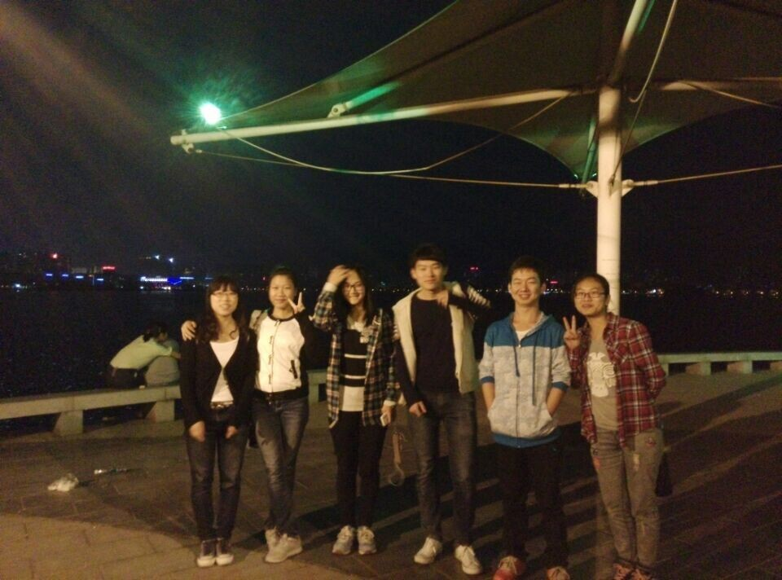
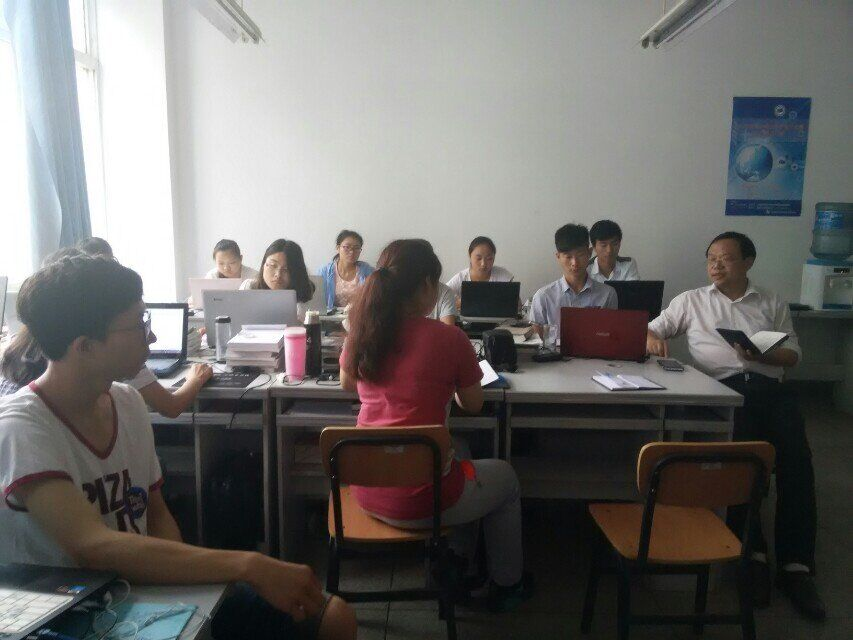
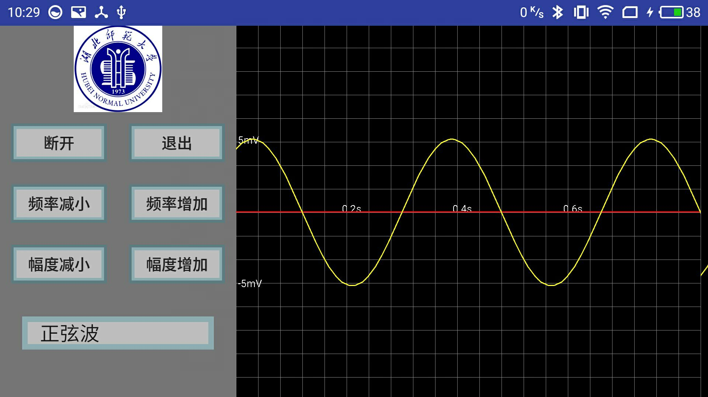
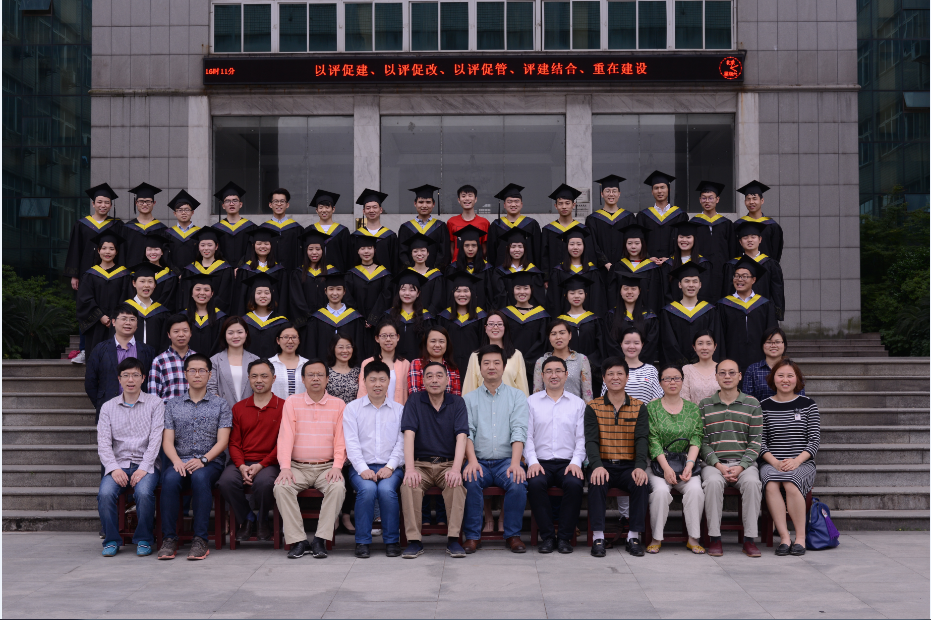

本人毕业于湖北师范大学,是2017届毕业生.虽说是应届生,但入程序开发的深坑已久.对我而言,大学的生活也算是丰富,前期参加了学院的 学生组织干部,认识了很多朋友,也锻炼了自己与人交往的能力.后期开始静心的发展技术,跟随工作室指导老师参与项目开发.
青年志愿者服务大队是我奉献最多时间的学生组织,我在组织中担任活动部部长,组织并带领我院学生参加志愿者活动.下图是我 们在铁铺希望小学为留守儿童举办活动时拍摄的照片
在服务大队里关系最亲密的当然是与我共同奋斗的同事们.四个性格迥然不同的人走到了一起(有人安静温婉,愿意做着幕后的工作;有人遇 事不乱,总能想到办法解决掉问题;还有人就负责美貌如花,撑起我们部门的颜值了),为了公益事业奉献自己的爱心与时间.当下一届成员接替 了我们的位置后,我最开心的是我们队友间的情谊没有变.
从青年志愿者服务大队的任职退下来后,生活便轻松了很多,再也不用因为活动的时间与上课时间冲突选择翘课,而在带队时 又担心自己会被学院里查课的人查到.也不用为了写工作简报而熬夜到很晚.在闲下来的日子里,除了每天上课,已经没有别的事情 可以让我花心思了.于是便想去参加学院里的技术工作室,经过周期稍长的培训,笔试和面试后,终于正式进入AndiOS工作室
在工作室里,指导老师从Java开始,带我们打好基础.而更多的是需要我们自己花时间,去理解教材中的代码,理解面向对象的编程思想. 我是一个笨拙的人,理解起来没有那么迅速,便选择把教材里的所有示例全部敲了一遍,包括课后练习的代码,慢慢的对Java有了了解.
大三后跟着老师参与了实际的项目开发,为深圳一家电子公司设计Android APP,主要涉及的领域是蓝牙通信,本地音乐播放 在线音乐播放,系统闹钟,自定义View等.而后因为项目需要,代表工作室出差来到深圳,因而又认识了不少人,其中就有我大四工作时公司的老板.
大三暑假完成了学校的一些事情后,便受邀再次来到深圳,在联诺德电子有限公司实习工作,主要从事Android开发,而后整 个大四学年也留在此.找了好久居然没有拍公司的Logo,只能放一张原来公司所在地----鼎新大厦的图片了
后期公司转型,从研发转为生产,这对我而言将没有太多的项目需要去处理,也不会有深入的 知识点去深究,与我最初的想法开始偏远了,便选择了离开.当然还是很感谢这家公司和领导对我的照顾 让刚刚踏出学校的我没有经历窘迫的适应阶段.而友善的同事们即使在我离开后仍保持着对我的关心,真心感谢.
在往后便是毕业了,我的毕业设计作品是《基于Android的虚拟示波器》,利用自己在工作中对蓝牙技术的研究,使用蓝牙串口在 手机端接收数据,绘制波形.通过BluetoothSocket完成与串口的通信,改变波形幅值与频率或者改变波形的原始形状.
最后送上美美的毕业照,纪念我已经逝去的青春
